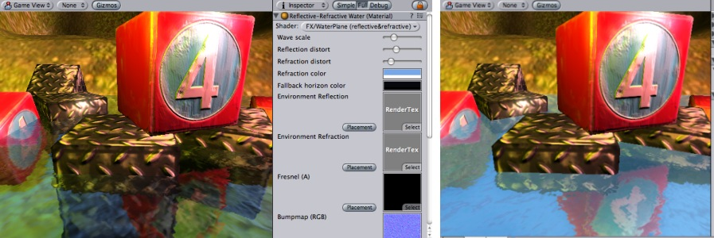
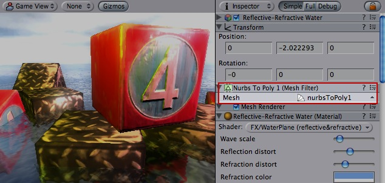

Previous
Previous
Unity includes several water prefabs (including needed shaders, scripts and art assets) among it's standard asset packages. Indie version includes a basic water, while Unity Pro includes a reflective and reflective+refractive water prefabs.

Reflective&Refractive water on the left, Reflective water on the right
Water setup
In most cases you just drag a prefab into your scene (make sure to have the standard assets installed):
- Unity Indie has Daylight Water and Nighttime Water in Standard Assets/Water.
- Unity Pro has Daylight Reflective Water, Nighttime Reflective Water and Reflective-Refractive Water in Pro Standard Assets/Water (but it needs some assets from Standard Assets/Water as well).
The prefab uses oval-shaped mesh for the water. If you need to use different Mesh the easiest way is just changing it in Mesh Filter of water object:

Creating water from scratch (Advanced)
The simple water in Unity Indie does not require any special setup; the most you can do is tweak values of the material. The rest of this section will describe how to setup reflective and/or refractive water from scratch (without using prefabs described above).
Water needs:
- A geometry of the water. This should be flat mesh, oriented horizontally. UV coordinates are not required. The water game object should use Water layer.
- One of water materials to render with (''FX/WaterPlane ...").
- A camera and a RenderTexture for the reflections. Refractive water needs additional camera and render texture.
- The camera(s) should be placed exactly on the water plane, and transform's y-axis should point upwards.
- Cameras should exclude Water layer from their culling mask. This makes water itself not visible in reflections/refractions.
- Target textures should be setup accordingly (e.g. reflections render texture for reflection camera).
- Attach Pro Standard Assets/Water/Sources/ReflectionRenderTexture script to the cameras. This script places the controlled camera into correct position (e.g. for reflection camera it reflects main camera along water plane), sets up the correct culling mode and sets up oblique projection matrix so that geometry gets properly clipped along water plane.
- In water material, the render textures connected to corresponding properties.
Properties in water materials
These properties are used in Reflective&Refractive water shader. Most of them are used in other water shaders as well.
| Property: | Function: |
|---|---|
| Scaling of waves bumpmap. The smaller the value, the larger water waves. | |
| how much reflection/refraction is distorted by the waves bumpmap. | |
| additional tint for refraction. | |
| render textures for real-time reflection and refraction. | |
| Defines the shape of the waves. The final waves are produced by combining two these bumpmaps, each scrolling at different direction, scale and speed. The second bumpmap is twice smaller than the first one. | |
| Scrolling speed for first bumpmap (1st and 2nd numbers) and the second bumpmap (3rd and 4th numbers). | |
| A texture with alpha channel controlling the Fresnel efffect - how much reflection vs. refraction is visible, based on viewing angle. |
The rest of properties are not used by Reflective&Refractive shader by itself, but need to be set up in case user's video card does not suppor it and must fallback to the simpler shader:
| Property: | Function: |
|---|---|
| A texture that defines water color (RGB) and Fresnel effect (A) based on viewing angle. | |
| The color of the water at horizon. (Used only in the simple water shader) | |
| Texture used to represent the water on really old video cards, if none of better looking shaders can't run on it. |